정보통신기사(구) (2014-03-09 기출문제)
1과목: 디지털 전자회로
1. 정류회로에서 다이오드를 병렬로 여러 개 접속시킬 경우에 나타나는 특성으로 옳은 것은?
- 과전압으로부터 보호할 수 있다.
- 과전류로부터 보호할 수 있다.
- 정류기의 역방향 전류가 감소한다.
- 부하출력에서 맥동률을 감소시킬 수 있다.
(정답률: 78%)

2. 다음 중 정류회로를 평가하는 파라미터에 해당되지 않는 것은?
- 최대역전압
- 궤환율
- 전압변동률
- 정류효율
(정답률: 59%)
3. 다음과 같은 용량성 캐패시터를 이용한 평활회로의 특징으로 옳지 않은 것은?
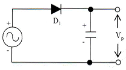
- 정류파형의 주파수가 높을수록 맥동률은 적어진다.
- 부하저항이 클수록 맥동률은 적어진다.
- 정류파형의 주파수는 맥동률과 무관하다.
- 캐패시터 용량값이 클수록 맥동률은 적어진다.
(정답률: 67%)
4. 잡음지수가 3[dB]이고 증폭도가 20[dB]인 전치 증폭기를 잡음지수가 5[dB]인 종속 증폭기에 연결하면 종합잡음지수는 얼마가 되는가?
- 3[dB]
- 3.2[dB]
- 5[dB]
- 5.2[dB]
(정답률: 64%)
5. 다음 중 증폭기에 대한 설명으로 옳은 것은?
- 교류성분을 직류성분으로 변환하기 위한 전기 회로다.
- 다이오드를 사용하여 교류 전압원의 (+) 또는 (-)의 반 사이클을 정류하고, 부하에 직류 전압을 흘리도록 한다.
- 교류(AC)를 직류(DC)로 바꾸는 여러 과정 가운데 맥류를 완전한 직류로 바꾸어 준다.
- 입력의 신호변화 형상이 출력단에 확대되어 복사시킨다.
(정답률: 79%)
6. 다음 중 트랜지스터 증폭 특성에 대한 설명으로 틀린 것은?
- 공통 베이스 회로의 입력 임피던스는 작고 출력 임피던스는 크다.
- 공통 베이스 회로의 전류 이득과 공통 컬렉터 회로의 전압 이득은 모두 1보다 크다.
- 공통 컬렉터 회로의 입력 임피던스는 크고 출력 임피던스는 작아 임피던스 매칭 회로로 사용된다.
- 증폭 회로의 입출력 위상관계는 공통 베이스 및 컬렉터 회로의 경우 동일 위상이고 공통 이미터의 경우 반전된 위상이다.
(정답률: 69%)
7. 다음 증폭기 회로에서 β=200인 경우 컬렉터 전류 IC는 얼마인가?
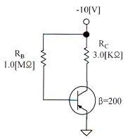
- 1.25[mA]
- 2.00[mA]
- 10.1[mA]
- 1.86[mA]
(정답률: 60%)
8. 외부로부터의 전기적인 신호가 없어도 회로 내에서 전기진동을 발생하는 회로를 무엇이라 하는 가?
- 발진회로
- 변조회로
- 정류회로
- 전원회로
(정답률: 82%)
9. 발진회로에서 발진을 지속하기 위해 필요한 과정은?
- 출력신호의 일부분을 부궤환시킨다.
- 출력신호의 일부분을 정궤환시킨다.
- 외부로부터 지속적으로 입력신호를 제공한다.
- L과 C 성분을 제거한다.
(정답률: 83%)
10. FM에서 최대 주파수편이가 60[kHz]이고 최대 변조주파수가 6[kHz]라 하면 변조도는 얼마인가? (단, 변조지수는 8이다.)
- 6[%]
- 60[%]
- 80[%]
- 120[%]
(정답률: 67%)
11. 다음 중 변조과정에 대한 설명으로 옳은 것은?
- 반송파에 정보신호(음성ㆍ화상ㆍ데이터 등)를 싣는 것을 변조라 한다.
- 변조된 높은 주파수의 파를 반송파라 한다.
- 변조는 소신호로 대전류를 제어하는 것이다.
- 저주파는 음성 신호파를 운반하는 역할을 하므로 피변조파라 한다.
(정답률: 81%)
12. 트랜지스터의 스위칭 시간으로 Turn-on 시간은?
- 하강시간
- 하강시간+축적시간
- 축적시간
- 상승시간+지연시간
(정답률: 82%)
13. 다음 그림은 이상적인 펄스를 나타낸 것이다. 펄스의 듀티 싸이클(Duty Cycle) D의 식으로 맞는 것은?
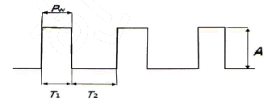
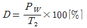
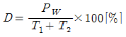
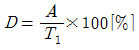
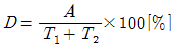
(정답률: 81%)
14. 다음 그림과 같은 논리회로 출력의 값과 그 기능은?
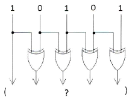
- 11011, 패리티 점검
- 11000, 양수/음수 점검
- 11111, 코드 변환
- 100000, 패리티 변환
(정답률: 83%)
15. 3(10)을 Gray Code로 변환하면?
- 0010
- 0001
- 0100
- 0110
(정답률: 71%)
16. 0과 1의 조합에 의하여 어떤한 기호라도 표현될 수 있도록 부호화를 행하는 회로를 무엇이라 하는가?
- Decoder
- Detector
- Encoder
- Comparator
(정답률: 73%)
17. 다음 중 환형 계수기(Ring Counter)와 같은 기능을 갖는 것은?
- BCD 계수기
- 가역 계수기
- 시프트 레지스터
- 순환 시프트 레지스터
(정답률: 75%)
18. 기억된 내용을 자외선을 비추어 소거시키는 ROM은?
- EPROM
- EAROM
- MASK ROM
- EEPROM
(정답률: 81%)
19. 디지털 논리 소자에서 회로 동작을 손상시키지 않으면서 출력에 연결할 수 있는 동일한 논리 게이트의 수를 무엇이라고 하는가?
- Settling
- Fan-Out
- Hold
- Setup
(정답률: 81%)
20. 카운터(Counter)를 이용하여 컨베이어 벨트를 통과하는 생산품의 개수를 파악하려고 한다. 최대 500개의 생산품을 카운트하기 위한 카운트를 플립플롭을 이용 제작할 때 최소한 몇 개의 플립플롭이 필요한가?
- 5
- 7
- 9
- 11
(정답률: 85%)
2과목: 정보통신 시스템
21. 다음의 정보통신망 구성 요소 중 일반 전화기는 어디에 속하는가?
- 단말장치
- 교환장치
- 전송장치
- 중계장치
(정답률: 88%)
22. 다음 중 혼합형 동기식 전송방식에 대한 설명으로 옳지 않는 것은?
- 동기식 전송과 비동기식 전송을 혼합한 것이다.
- 문자와 문자 사이에 휴지 시간이 있다.
- 송신측과 수신측이 비동기 상태에 있어야 한다.
- 비동기식보다는 전송 속도가 빠르다.
(정답률: 82%)
23. 아날로그 전송 회선에서 BPSK 변조 방식을 사용하여 4,800[bps]의 전송 속도로 데이터를 전송하려 할 때 필요한 주파수대역폭은? (단, 잡음이 없는 채널인 경우)
- 1,200[Hz]
- 2,400[Hz]
- 4,800[Hz]
- 9,600[Hz]
(정답률: 74%)
24. 다음 중 BSC 프로토콜에서 사용되지 않는 방식은?
- 루프(Loop) 방식
- 반이중(Half Duplex) 방식
- 포인트 투 포인트(Point-to-Point) 방식
- 셀렉션(Selection) 방식
(정답률: 72%)
25. 표준화 기구 중에서 주로 데이터 통신의 물리적인 연결 인터페이스와 전자신호의 규격을 규정하는 기관은?
- RFC
- EIA
- IEEE
- ITU-R
(정답률: 67%)
26. 데이터에 통신국의 주소, 에러 검출 부호, 프로토콜 제어 등의 제어정보인 헤더(Header)를 부착하는 기능은?
- 흐름제어
- 주소지정
- 다중화
- 캡슐화
(정답률: 87%)
27. 프로토콜의 구성요소 중 통신할 ‘신호들의 실제 의미’란 뜻으로 상호협상과 오류처리에 대한 제어정보 등이 포함되는 것은?
- 의미(Semantics)
- 구문(Syntax)
- 동기(Timing)
- 포맷(Format)
(정답률: 85%)
28. 전자우편이나 파일 전송과 같은 사용자 서비스를 제공하는 계층은?
- 물리계층
- 데이터링크계층
- 표현계층
- 응용계층
(정답률: 80%)
29. LAN의 전송방식에서 원래의 신호를 다른 주파수대역으로 옮기지 않고 전송하는 방식은?
- 브로드밴드 방식
- 링 방식
- 루프 방식
- 베이스밴드 방식
(정답률: 72%)
30. 다음 중 유선 홈네트워킹 기술로 적합하지 않는 것은?
- Home PNA
- PLC(Power Line Communication)
- UWB
- IEEE 1394
(정답률: 62%)
31. 이동통신에서 반사나 회절 등으로 전파 전송경로가 다르게 되어 수신신호의 레벨이 변동이 생기는데 이러한 현상을 무엇이라 하는가?
- 페이딩 현상
- 도플러 현상
- 채널간섭 현상
- 지연확산 현상
(정답률: 74%)
32. 무선통신시스템에 적용되는 슈퍼헤테로다인 방식의 수신부를 신호 흐름 순서대로 올바르게 구성한 것은?
- 믹서 - IF증폭기 - 복조기 - 재생기
- 복조기 - 믹서 - IF증폭기 - 재생기
- 재생기 - IF증폭기 - 믹서 - 복조기
- IF증폭기 - 믹서 - 재생기 - 복조기
(정답률: 60%)
33. 우주 잡음, 대기 가스, 강우에 의한 감쇠 및 열잡음 등의 영향이 적은 전파의 창(Radio Window)에 해당하는 주파수 대역으로 옳은 것은?
- 1[GHz] 이하
- 1 ~ 10GHz]
- 10 ~15GHz]
- 30 GHz] 이상
(정답률: 80%)
34. 광대역통합망(BcN : Broadband Convergency Network)의 계층구조 중 전달망 계층에 대한 설명으로 옳지 않은 것은?
- 광대역(Broadband) 서비스 제공
- 이동망 사용자의 이동성(Mobility)
- 서비스 보장(QoS) 및 정보보안
- 소프트위치에 의한 다양한 서비스 구현
(정답률: 62%)
35. 종합정보통신망(ISDN)에서 사용자-망간 인터페이스의 기본 채널구조인 2B+D의 전송용량은?
- 48[kbps]
- 96[kbps]
- 144[kbps]
- 192[kbps]
(정답률: 79%)
36. 광케이블을 집안까지 연결함으로써 기존 방식에 비해 빠르고 안정된 품질의 서비스가 가능한 초고속 인터넷 설비 방식을 무엇이라 하는가?
- FTTH
- HFC
- FTTO
- FTTC
(정답률: 71%)
37. 정보통신 시스템 구축 시 네트워크에 관한 고려사항이 아닌 것은?
- 파일 데이터의 종류 및 측정방법
- 백업회선의 필요성 여부
- 단독 및 다중화 등 조사
- 분기회선 구성 필요성
(정답률: 75%)
38. 시스템을 구성하는 각 장비의 기능에 따라 정상상태를 시험할 목적으로 사용되는 프로그램은?
- 프로그램 보수 프로그램
- 장애해석 프로그램
- 시스템 가동 통계 프로그램
- 보수시험 프로그램
(정답률: 67%)
39. 다음 중 TMN(Telecommunication Management Network)에서 정의 하고 있는 5가지 관리 기능에 해당하지 않는 것은?
- 성능관리
- 보안관리
- 조직관리
- 구성관리
(정답률: 83%)
40. 20개의 전화국 간을 메시(Mesh)형으로 연결하려면 필요한 회선 수는?
- 190개
- 200개
- 260개
- 380개
(정답률: 87%)
3과목: 정보통신 기기
41. 어떤 펄스의 펄스시간이 1,000×10-6[sec]일 때, 이 펄스의 변조속도[baud]는?
- 1[baud]
- 10[baud]
- 100[baud]
- 1,000[baud]
(정답률: 85%)
42. 다음 중 정보통신시스템의 구성요소가 아닌 것은?
- 통신회선
- 통신제어장치
- 단말장치
- 전송통제기
(정답률: 67%)
43. 터미널과 데이터 전송회선을 연결해주는 부분으로 터미널 내부의 전기적 신호레벨과의 상호변환 역할은 어느 부분에서 담당하는가?
- 회선 접속부
- 회선 제어부
- 입출력 제어부
- 신호 제어부
(정답률: 58%)
44. 두 개의 음성급 회선을 이용하여 고속의 전송속도를 얻을 수 있는 것은?
- 집중화기
- 다중화기
- 역 다중화기
- 포트 공동 이용기
(정답률: 54%)
45. TDM에서 n개의 신호 출처가 있다면 각 프레임이 포함하는 시간 슬롯(Time Slot)은 최소 몇 개 인가?
- n-1개
- n개
- n+1개
- n+2개
(정답률: 61%)
46. 어느 센터의 최번시 통화량을 측정하니 1시간동안에 3분짜리 100개가 측정되었다. 이 센터의 최번시 통화량은 몇 [Erl]인가?
- 4[Erl]
- 5[Erl]
- 6[Erl]
- 7[Erl]
(정답률: 82%)
47. 다음 중 포트 공용 이용기(Port Sharing Unit)의 특징이 아닌 것은?
- 여러 대의 터미널이 하나의 포트를 이용하므로 포트의 비용을 줄일 수 있다.
- 폴링과 셀렉션 방식에 의한 통신이다.
- 컴퓨터와 가까운 곳에 있는 터미널이나 원격지 터미널에 모두 이용 할 수 있다.
- 컴퓨터 포트의 평균 사용률이 낮으므로 낮은 개선을 위해 사용한다.
(정답률: 63%)
48. 다음 중 집중화기에 대한 설명으로 옳지 않은 것은?
- 개개의 입력회선을 n개의 출력회선으로 집중화하는 장치이다.
- 입력회선의 수는 출력회선의 수보다 같거나 많다.
- 하나의 고속 통신회선에 여러 개의 저속 통신회선을 접속하기 위해 사용한다.
- 동기식인 비트 삽입식과 비동기식인 문자 삽입식으로 분류된다.
(정답률: 55%)
49. 제공되는 프로그램 패키지를 횟수에 관계없이 일정기간 시청하고 정액제 방식으로 VOD콘텐츠를 과금하는 방식을 무엇이라 하는가?
- Real VOD
- Subscription VOD
- Near VOD
- Free VOD
(정답률: 83%)
50. 전화기와 교환기 간의 접속 제어 정보를 전달하는 신호방식은?
- 가입자선 신호 방식
- 중계선 신호 방식
- No.6 신호 방식
- No.7 신호 방식
(정답률: 58%)
51. 현재 방송장비에서 많이 사용하는 전송 방식으로 아날로그 CCTV 카메라 에서도 기존에 설치되어 있는 동축케이블을 활용해 고화질 영상전송이 가능하게 한 방식은?
- DNR
- HD-SDI
- HDMI
- WDR
(정답률: 77%)
52. 다음 중 CCTV의 기본 구성에 해당하지 않는 것은?
- 촬상 장치
- 전송 장치
- 스펙트럼 분석 장치
- 표시 장치
(정답률: 78%)
53. H.323 또는 SIP(Session Initiation Protocol)의 프로토콜을 이용하여 인터넷 상에서 음성 전화 서비스를 제공하는 것을 무엇이라 하는가?
- VoIP
- Zigbee
- Bluetooth
- WPAN
(정답률: 86%)
54. 다음 중 강우로 인한 위성통신 신호의 감쇠를 보상하기 위한 방법이 아닌 것은?
- Site Diversity
- Angle Diversity
- Orbit Diversity
- Frequency Diversity
(정답률: 79%)
55. 다음 중 정지위성에 대한 설명으로 옳지 않은 것은?
- 지구 전체 커버 위성 수는 90도 간격으로 최소 4개이다.
- 지구표면으로부터 정지 궤도의 고도는 약 36,000[km]이다.
- 지구 중심으로부터 고도는 약 42,000[km]이다.
- 지구의 인력과 위성의 원심력이 일치하는 공간에 위치한다,
(정답률: 72%)
56. 자유 공간에서 송수신 안테나간 거리 2[km],에 10[GHz]의 주파수로 통신 링크를 구성하고자 한다. 이에 대한 전송경로 손실은 대략 얼마인가?
- 106.52[dB]
- 112.52[dB]
- 118.52[dB]
- 124.52[dB]
(정답률: 79%)
57. 이동전화망의 위치등록 장치인 HLR(Home Location Register)의 기능이 아닌 것은?
- 등록인식
- 위치확인
- 채널할당
- 루팅정보조회
(정답률: 69%)
58. 고품질의 음성 및 영상 서비스를 제공할 수 있는 이동형 멀티미디어 방송은?
- HDTV(High Definition Television)
- DMB(Digital Multimedia Broadcasting)
- TRS(Trunked Radio System)
- IS-95C
(정답률: 82%)
59. 다음 중 비디오텍스의 하드웨어 구성요소가 아닌 것은?
- 정보 통신망
- 사용자 단말기
- 중앙 정보 센터
- 헤드엔드
(정답률: 80%)
60. 다음 중 메시지 처리시스템(MHS)의 구성 요소가 아닌 것은?
- MS(Message Store)
- UA(User Agent)
- AU(Access Unit)
- MH(Message Host)
(정답률: 76%)
4과목: 정보전송 공학
61. 한 개의 광섬유에 파장이 다른 신호를 단일 빔으로 모사서 전송하는 광 다중 전송방식은?
- WCM
- TDM
- FDM
- WDM
(정답률: 77%)
62. 다음 중 통신속도와 채널용량에 대한 설명으로 맞는 것은?
- 변조속도는 통신회선에 1초 동안 전송 할 수 있는 비트 수이다.
- 신호속도는 1분 동안에 통신회선에 전달 할 수 있는 비트 수이다.
- 전송속도는 1분 동안에 통신회선에 전송 할 수 있는 문자 수이다.
- 전송로에 단위 시간당 전달할 수 있는 최대 전송률을 Shannon의 채널용량이라고 한다.
(정답률: 74%)
63. 16진 PSK를 사용하는 시스템에서 데이터 신호속도가 12,400[bps]라면 변조속도는 얼마인가?
- 775[baud]
- 1,550[baud]
- 3,100[baud]
- 6,200[baud]
(정답률: 83%)
64. 5[kHz]의 음성신호를 재생시키기 위한 표본화 주기는?
- 225[μs]
- 200[μs]
- 125[μs]
- 100[μs]
(정답률: 62%)
65. CDMA 통신망에서 주파수 재사용 패턴(Frequency Reuse Pattern) K=1을 적용할 수 있는 것은 어떤 기술에 의하여 가능하게 되는가?
- Orthogonal Code
- 채널 코딩(Channel Coding)
- 소스 코딩(Source Coding)
- Equalizing
(정답률: 67%)
66. 다음 문장의 괄호 a-b-c-d-e가 순서대로 바르게 짝지어진 것은?
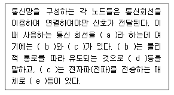
- 토플로지 - 중계기 - 스위치 - 교환기 - 증폭기
- 링크 - 집중화기 - 다중화기 - MUX - 안테나
- 네트워크 - 이더넷 - 무선통신망 - 전화선 - 발진기
- 전송매체 - 유도전송매체 - 비유도전송매체 - 유선 - 공기
(정답률: 71%)
67. 가장 널리 사용되는 100[Mbps] 디지털 전송용 UTP 케이블의 접속에 사용되는 8핀 커넥터 표준 규격은?
- RS-22
- RS-45
- RJ-22
- RJ-45
(정답률: 80%)
68. Hub(허브)등이 없는 상태에서 동종 장비 간, 예를 들어 컴퓨터와 컴퓨터 간에 직접 연결하여 정보를 교환 할 때 사용하는 케이블은?
- Cross 케이블
- Link 케이블
- Hub 케이블
- Extend 케이블
(정답률: 70%)
69. 블록동기 방식 중 문자동기 방식에 대한 설명으로 옳지 않은 것은?
- 데이터블록 앞에 데이터의 시작을 알리는 전송제어 코드 ‘STX’사용
- 전송 시 동기용 전송 제어코드 ‘SYN’ 2개 이상 사용
- 데이터 전송의 끝을 의미하는 ‘END’ 제어신호 사용
- 에러를 체크하기 위한 에러제어코드 ‘BCC’사용
(정답률: 79%)
70. ‘TEST’라는 문자를 아스키(ASKII) 코드 형태로 변환하여 비동기 방식으로 전송할 때 스타트 비트, 스톱 비트를 각각 1비트로 할 경우 전송되는 총 비트수는?
- 6[bit]
- 28[bit]
- 32[bit]
- 40[bit]
(정답률: 81%)
71. 다음 중 통화로 신호방식에 대한 설명으로 옳지 않은 것은?
- 개별선 신호방식 또는 CAS 방식으로 불린다.
- 통화로와 신호로가 개별회선에 중첩되는 방식이다.
- 통신선로를 송신 및 수신선로로 구분할 필요가 없다.
- 대표적으로 R1, R2, No.1~5을 들 수 있다.
(정답률: 70%)
72. 다음 중 디지털 통신망에서 발생하는 Slip에 대한 설명으로 옳지 않은 것은?
- 일종의 버퍼인 ES의 오버플로우나 언더플로우에 의한 데이터 손실을 Slip이라고 한다.
- Slip이 제어되지 않으면 프레임 동기 손실을 유발한다.
- 1프레임 단위로 발생하는 Slip을 Controlled Slip이라 한다.
- Slip를 방지하는 방법으로 SSB(Single Side Band)방법을 사용한다.
(정답률: 68%)
73. 다음 중 서브넷팅(Subnetting)을 하는 이유로 옳지 않은 것은?
- IP주소를 효율적으로 사용할 수 있다.
- 트래픽의 관리 및 제어가 가능하다.
- 불필요한 브로드캐스팅 메시지를 제한할 수 있다.
- 서브넷 분할을 하면 호스트 ID를 사용하지 않아도 된다.
(정답률: 84%)
74. IPv4와 IPv6의 특징에 대한 설명으로 틀린 것은?
- IPv6는 IPv4 주소공간의 4배인 128비트의 주소 공간을 갖는다.
- IPv4의 주소는 10진수로 표시되고 IPv6의 주소는 16진수로 표시된다.
- IPv6는 A, B, C, D 등의 클래스 단위로 비순차적 주소 할당방식을 사용한다.
- IPv4는 별도로 IPSec과 같은 보안 관련 프로토콜을 설치해야 한다.
(정답률: 64%)
75. 다음 중 VLAN의 설명으로 옳은 것은?
- 유니캐스트 도메인(Unicast Domain)을 분리한다.
- 브로드캐스트 도메인(Broadcast Domain)을 분리한다.
- 애니캐스트 도메인(Anycast Domain)을 분리한다.
- 멀티캐스트 도메인(Multicast Domain)을 분리한다.
(정답률: 73%)
76. 다음 중 IPv4의 주소 구성을 나타낸 것으로 옳은 것은?(오류 신고가 접수된 문제입니다. 반드시 정답과 해설을 확인하시기 바랍니다.)
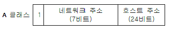
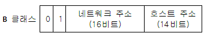
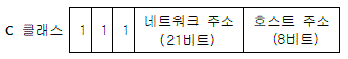
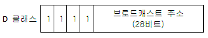
(정답률: 65%)
77. IP 통신망의 경로 지정 통신 규약의 하나로서 경유하는 라우터의 대수(또는 홉)에 따라 최단 경로를 동적으로 결정하는 거리 벡터 알고리즘을 사용하는 프로토콜은?
- RIP(Routing Information Protocol)
- OSPF(Open Shortest Path First)
- BGP(Border Gateway Protocol)
- DHCP(Dynamic Host Configuration Protocol)
(정답률: 82%)
78. 인터넷 전화(VoIP)망과 유선 전화망(PSTN) 간을 상호 연동시키는데 시용되는 시그널링 프로토콜은?
- SIGTRAN
- No.7 CSS
- R2 CAS
- H.323
(정답률: 60%)
79. 전송제어 프로토콜 중 HDLC 프로토콜의 시작 플래그(Opening Flag)가 ‘01111110’이면, 종료 플래그(Closing Flag)는 어느 것인가?
- 11111110
- 01111111
- 01111110
- 11111111
(정답률: 68%)
80. 다음 중 FEC(Forward Error Correction)의 특징이 아닌 것은?
- 역 채널을 사용하지 않는다.
- 연속적 데이터 전송이 가능하다.
- 기기와 코딩 방식이 단순하다.
- 잉여 비트에 의한 전송채널 대역이 낭비된다.
(정답률: 45%)
5과목: 전자계산기일반 및 정보통신설비기준
81. 제어장치를 마이크로프로그래밍(Microprogramming)으로 구현하였을 때 하드와이어(Hardwired) 제어장치에 비하여 장점이 되지 않는 것은?
- 제어 속도가 빠르다.
- 제어 장치의 설계를 단순화 할 수 있다.
- 오류 발생률이 낮다.
- 구현 비용이 적게 든다.
(정답률: 40%)
82. 다음 중 인터넷 응용에 적합한 객체지향 언어는?
- Fortran
- Ada
- Java
- Lisp
(정답률: 85%)
83. 다음 중 I/O 채널(Channel)에 대한 설명으로 틀린 것은?
- CPU는 일련의 I/O 동작을 지시하고 그 동작 전체가 완료된 시점에서만 인터럽트를 받는다.
- 입출력 동작을 위한 명령문 세트를 가진 프로세서를 포함하고 있다.
- 선택기 채널(Selector Channel)은 여러 개의 고속 장치들을 제어한다.
- 멀티플렉서 채널(Multiplexer Channel)은 복수개의 입ㆍ출력 장치를 동시에 제어할 수 없다.
(정답률: 69%)
84. 다음 진수 표현 중 가장 큰 수는?
- FF(16)
- 257(10)
- 11111111(2)
- 377(8)
(정답률: 69%)
85. 다음 중 컴퓨터에서 수를 표현하는 방식이 아닌 것은?
- 양자화 표현
- 1의 보수 표현
- 2의 보수 표현
- 부호화 - 절대치 표현
(정답률: 79%)
86. 다음 중 운영체제에 대한 설명으로 틀린 것은?
- 시스템을 관리하고 제어하는 기능을 가진다.
- 윈도우나 유닉스는 명령어 실행과 수행방법이 같다.
- 대표적인 운영체제는 윈도우 XP, 윈도우 7, 리눅스 등이 있다.
- 컴퓨터와 사용자 간에 중재적인 역할은 한다.
(정답률: 82%)
87. 10진수 56789에 대한 BCD코드(Binary Coded Decimal)는 어느 것인가?
- 0101 0110 0111 1000 1001
- 0011 0110 0111 1000 1001
- 0111 0110 0111 1000 1001
- 1001 0110 0111 1000 1001
(정답률: 79%)
88. 마이크로프로세서를 구성하는 요소 장치로 데이터 처리과정에서 필수적으로 요구되는 것끼리 올바르게 짝지어진 것은?
- 제어장치, 저장장치
- 연산장치, 제어장치
- 저장장치, 산술장치
- 논리장치, 산술장치
(정답률: 84%)
89. 다음 프로세스간 통신에 있어서 직접통신과 관련이 없는 사항은?
- 각 쌍의 프로세스에 대해서 정확히 하나의 통로만 존재한다.
- 한 통로는 두개 이상의 프로세스와 연관될 수 있다.
- 프로세스들이 서로 통신을 하기 위해서는 상대방의 이름만 알면 된다.
- 통로는 보통 단일 방향이거나 양쪽 방향일 수 있다.
(정답률: 48%)
90. 최근 운영체제들은 다양한 기능과 사용자의 편의성을 개선한 GUI가 개발되고 있으며 컴퓨터 시스템의 운영에 필요한 자원관리기능을 향상시키기 위한 연구도 진행되고 있다. 이와 같은 운영체제의 자원관리기능에 속하지 않는 것은?
- 메모리
- 컴파일러
- 주변장치
- 데이터
(정답률: 63%)
91. 정보통신공사업의 등록기준에 있어서 법인인 경우 자본금은 얼마 이상이어야 하는가?
- 5천만원
- 1억원
- 1억 5천만원
- 2억 5천만원
(정답률: 66%)
92. 다음 중 전기통신사업법령이 정하는 사항을 갖추어 미래창조과학부장관에게 등록하면 경영할 수 있는 전기통신사업은?(오류 신고가 접수된 문제입니다. 반드시 정답과 해설을 확인하시기 바랍니다.)
- 기간통신사업
- 별정통신사업
- 통합통신사업
- 부가통신사업
(정답률: 74%)
93. 다음 중 정보통신공사의 설계 및 시공에 관한 설명으로 틀린 것은?
- 공사를 설계하는 자는 기술기준에 적합하도록 설계하여야 한다.
- 설계도서를 작성하는 자는 그 설계도서에 서명또는 기명날인하여야 한다.
- 감리원은 설계도서 및 관련 규정에 적합하도록 공사를 감리하여야 한다.
- 감리업체는 그가 감리한 공사의 준공설계도서를 준공 후 5년간 보관하여야 한다.
(정답률: 83%)
94. 정보통신의 표준화에 관한 업무를 효율적으로 추진하기 위하여 미래창조과학부장관의 인가를 받아 설립된 기관은?
- 한국정보통신기술협회
- 한국정보화진흥원
- 국립전파연구원
- 한국방송통신전파진흥원
(정답률: 69%)
95. 다음 중 구내통신선로설비에서 충분한 회선을 확보하여야 하는 경우와 관계없는 것은?
- 옥외로 인입되는 국선의 구성
- 구내로 인입되는 국선의 수용
- 구내회선의 구성
- 단말장치 등의 증설
(정답률: 70%)
96. 해킹, 컴퓨터 바이러스, 논리폭탄, 메일폭탄, 서비스 거부 또는 고출력 전자기파 등의 방법으로 정보통신망 또는 이와 관련된 정보시스템을 공격하는 행위를 하여 발생한 사태를 무엇이라 하는가?
- 인터넷 사태
- 정보통신 사태
- 침해사고
- 통신사고
(정답률: 74%)
97. 국선 수용 회선이 100회선 이하인 주배선반선의 접지저항 허용범위는 얼마인가?
- 1,000[Ω] 이하
- 100[Ω] 이하
- 10[Ω] 이하
- 1[Ω] 이하
(정답률: 58%)
98. 방송통신설비의 기술기준에 관한 규정에서 정의한 ‘특고압’은?
- 7,000볼트를 초과하는 전압
- 5,000볼트를 초과하는 전압
- 2,500볼트를 초과하는 전압
- 직류는 750볼트, 교류는 600볼트를 초과하는 전압
(정답률: 83%)
99. 정보통신공사업법에서 정하는 용어의 정의로 옳지 않은 것은?
- ‘정보통신설비’란 유선, 무선, 광선, 그 밖의 전자적 방식으로 정보를 저장ㆍ제어ㆍ처리하거나 송수신하기 위한 설비를 말한다.
- ‘설계’란 공사에 관한 계획서, 설계도면, 시방서(示方書), 공사비명세서, 기술계산서 및 이와 관련된 서류를 작성하는 행위를 말한다.
- ‘용역’이란 다른 사람의 위탁을 받아 공사에 관한 조사, 설계, 감리, 사업관리 및 유지관리 등의 역무를 하는 것을 말한다.
- ‘감리’란 품질관리ㆍ시공관리에 대한 지도 등에 관한 시공자의 권한을 대행하는 것을 말한다.
(정답률: 64%)
100. 다음 중 정보통신설비의 사용전검사에 관한 100.설명으로 옳지 않은 것은?
- 사용점검사를 받으려는 자는 신청서를 제출하여야 한다.
- 사용전검사 신청을 받은 지자체의 장은 검사를 실시하여야 한다.
- 검사 결과가 부적합하다고 판정받으면 즉시 시설물을 해체하여야 한다.
- 검사 결과가 적합하면 지자체의 장은 가용전검사필증을 발급한다.
(정답률: 84%)